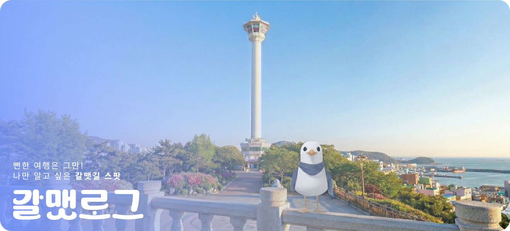
부산을 대표하는 가장 유명한 해변으로 넓은 백사장과 고층 빌딩이 어우러진 도심형 바다
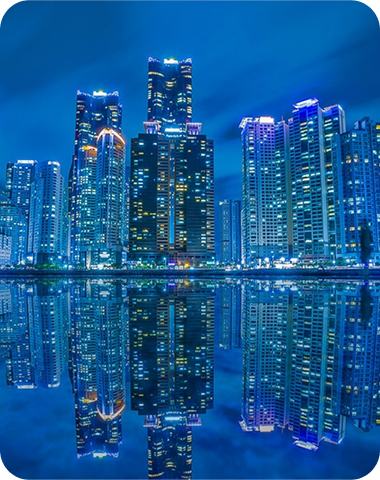
낙동강과 함께 하는 야외 정원, 조형물 등 포토존이 많은 이국적인 공간
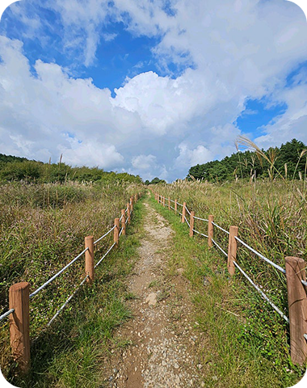
해운대 신시가지와 마린시티, 부산 최고역 도심 스카이라인을 조망
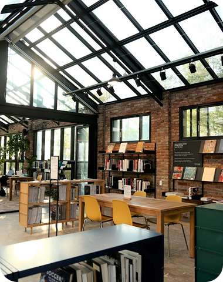
옛 와이어 공장을 재생한 곳으로 차가운 콘크리트와 푸른 대나무 숲 공간
아름다운 석양을 감상할 수 있는 부산의 숨겨진 명소
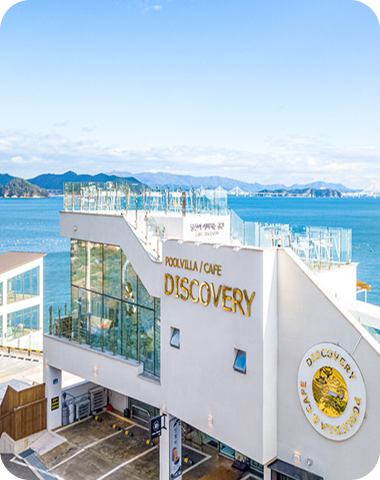
루프탑에서 즐기는 브런치와 가덕도 바닷가 카페 에그타르트, 샌드위치 등 베이커리 메뉴가 인기
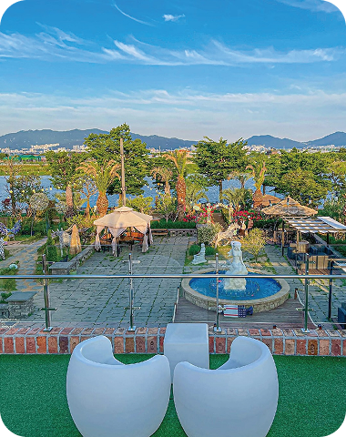
낙동강과 함께 하는 야외 정원, 조형물, 등 포토존이 많은 이국적인 공간
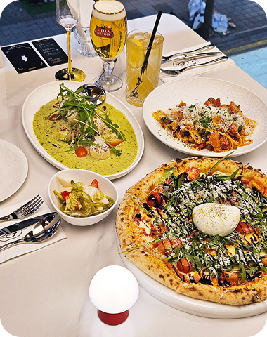
인기 이탈리안 레스토랑으로, 이색적인 파스타·뇨끼·화덕피자 맛집
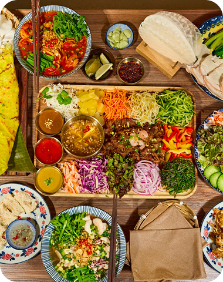
베트남식 면 요리 전문점, 진한 국물과 다양한 현지 스타일 메뉴
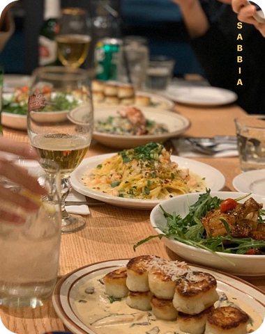
달맞이길에 있는 이탈리안 레스토랑, 감자 뇨끼 맛집
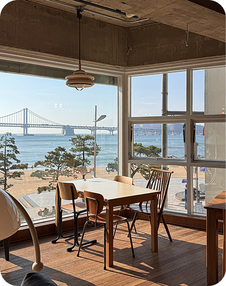
광안리를 한 눈에 바라볼 수 있는 통유리와 미드센추리 인테리어가 돋보이는 브런치 카페
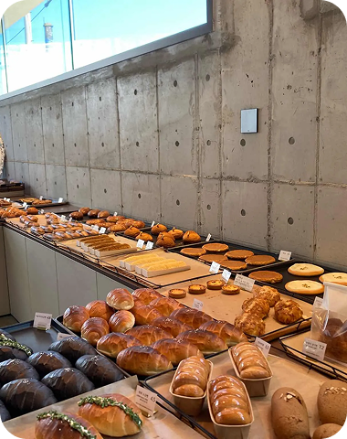
산복도로 뷰와 넓은 공간, 베이커리까지 즐길 수 있는 대형 감성 낭낭한 카페
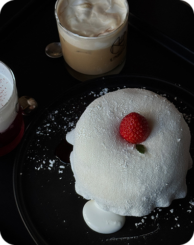
수플레 팬케이크와 스페셜티 커피를 함께 즐길 수 있는 감성 카페
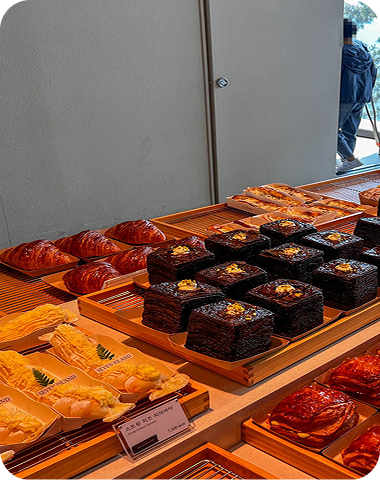
테라스와 넓은 실내, 힐링 분위기 만끽하는 장소, 세계적인 베르사유상 수상
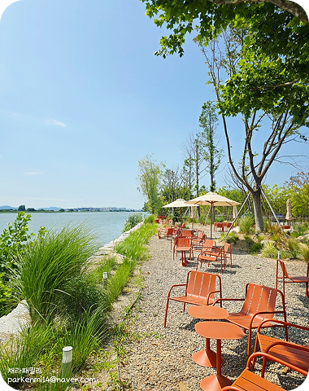
리버뷰와 여유로운 분위기가 매력적인 강서구 감성 카페